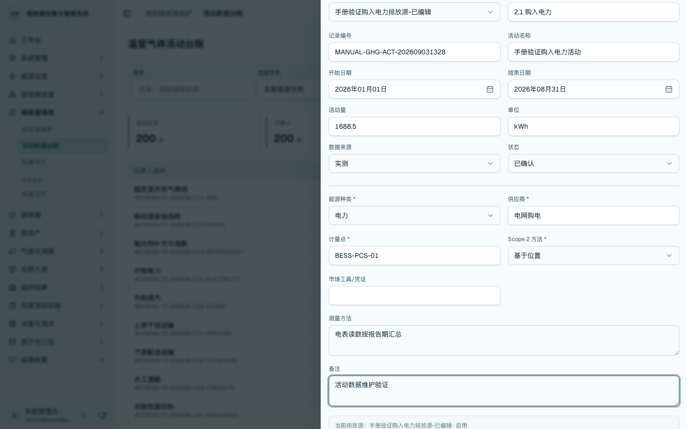
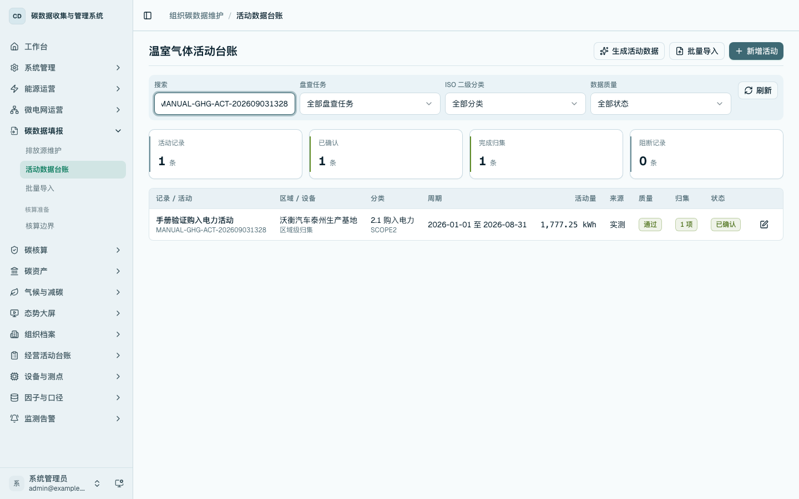

组织碳总览与结构分析
本章用于查看组织温室气体核算后的汇总指标、排放结构、趋势变化和追溯路径。边界、排放源、活动数据、因子和报告分别在独立章节维护，本章只说明核算结果的展示和分析。
组织碳总览
进入 /carbon/organization/overview，查看 Scope 1、Scope 2、Scope 3、报告期排放趋势和排放构成。

排放结果明细与追溯
在 /carbon/organization/records 查看排放结果明细、排放源帕累托分析和核算公式。打开明细后可核对活动数据、参数因子、区域设备归集和证据文件。


碳流向与结构分析
进入 /carbon/organization/flow，查看组织边界至区域设备碳流、主要排放路径和核算异常提示。该页面用于说明排放构成和追溯路径。

ISO 14064 分类查看
进入 /carbon-mgmt/activities，通过 ISO 二级分类筛选活动记录和归集状态：
- 类别 1：固定燃烧等直接排放。
- 类别 2：购入电力等能源间接排放。
- 类别 3：员工通勤、运输等间接排放。
- 类别 4：采购商品与服务等间接排放。
- 类别 5：售出产品相关活动。
- 类别 6：其他经确认的间接排放。
活动数据台账按同一套新增、编辑、详情、归集和删除方式维护各类活动数据。不同分类在表单中显示对应字段，便于在统一台账中完成分类填报。

